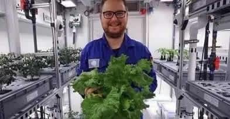

科学家们基于水栽培法，使用可重复使用的水循环与营养系统， 同时，以LED照明代替日光，并仔细监控室内的二氧化碳。
德国位于南极的诺伊迈尔三号站(Neumayer Station III)的科学家， 于室外温度低于-20°C的条件下，在高科技温室(EDEN-ISS)成功种出了无需泥土、 日光及农药的蔬菜，包括3.6公斤色拉生菜、18条黄瓜和70颗小萝卜。
据了解，科学家们基于水栽培法，使用可重复使用的水循环与营养系统， 同时，以LED照明代替日光，并仔细监控室内的二氧化碳。此外，据德国航空 中心介绍，到5月前，科学家有望每周收成4.5公斤的水果和蔬菜。
但值得注意的是，该项目聚焦于未来到火星或月球等种植更加丰富的蔬菜品种， 包括萝卜、色拉用的绿叶蔬菜、番茄、黄瓜、辣椒、甚至是药草。不过这样的 栽种系统也有其限制，科学家表示有的蔬果要等很久才熟成，例如草莓， 他们现在都还在等一次成功的收成。